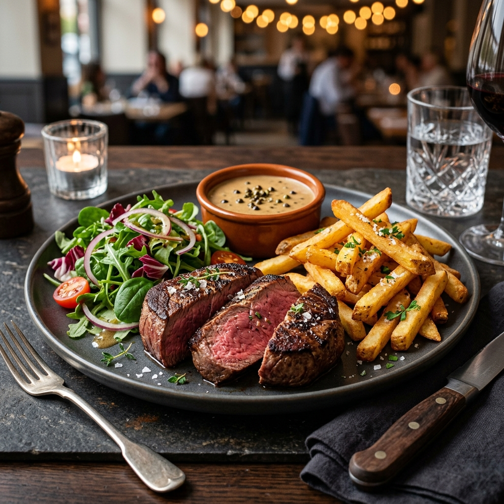
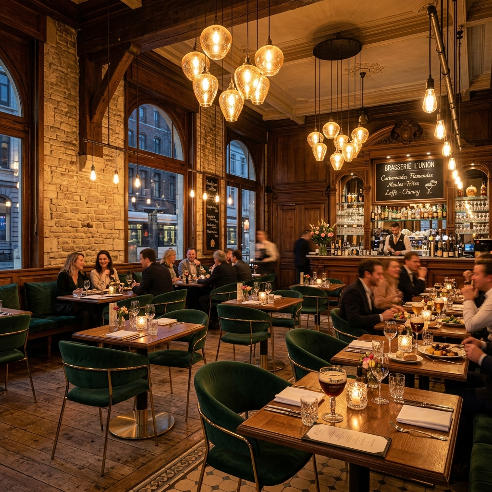
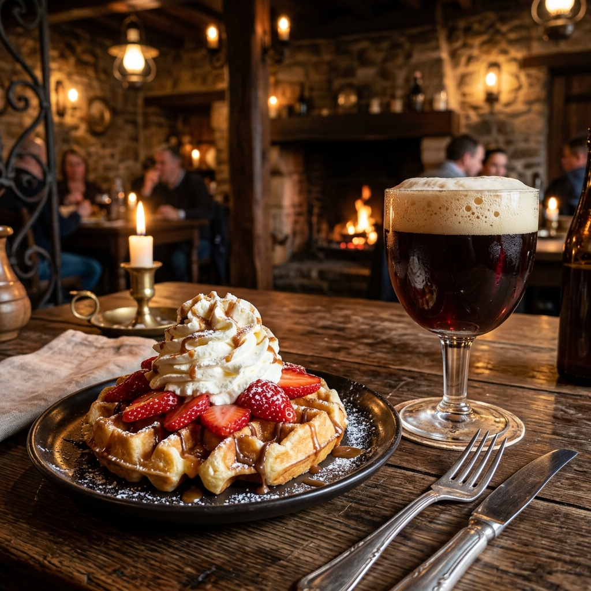

Gelegen op het sfeervolle Albertusplein in Scherpenheuvel. Kom langs en proef onze legendarische familierecepten in een authentiek, gezellig kader.
Al jarenlang een gevestigde waarde in Scherpenheuvel voor gezinnen, groepen en pelgrims op zoek naar pure Belgische smaken.
Onze chef-kok bereidt met trots klassieke Vlaamse toppers, van ambachtelijk stoofvlees en vol-au-vent tot versgebakken Brusselse wafels.
Een warme, informele ontvangst waarbij iedereen zich meteen thuis voelt. Perfect voor gezellige familiemomenten of een gezellige avond met vrienden.
Onze uitgebreide drankenkaart bevat een fijne selectie aan speciaalbieren die perfect passen bij onze hartige brasseriegerechten.
Een greep uit onze meest geliefde gerechten. Vers en met zorg bereid volgens familietraditie.

KlassiekerZacht gegaard rundvlees in een rijke saus van donker abdijbier, geserveerd met een vers slaatje en onze goudgele Belgische frieten.
Volledig Menu
Chef's KeuzeMalse steak van de grill, geserveerd met een frisse salade en saus naar keuze (champignonroom, peperroom, provençaal of kruidenboter).
Volledig Menu
Zoete ZondeLuchtige, krokante wafel, warm geserveerd met verse aardbeien, een toef slagroom en poedersuiker. Heerlijk bij de koffie.
Volledig MenuOp zonnige dagen is het heerlijk toeven op ons ruime terras met uitzicht op het gezellige plein. Bovendien is Restaurant De Ram uitstekend uitgerust om grotere groepen, busreizen en familiefeestjes te ontvangen met op maat gemaakte groepsmenu's.
Echte beoordelingen van gasten die genoten van onze Belgische keuken en gezellige sfeer op het Albertusplein.
"Heerlijk ambachtelijk stoofvlees gegeten en genoten van een frisse Westmalle Tripel op het terras. Royale porties en authentieke Belgische kwaliteit!"
"Wat een sfeervolle en prachtige brasserie! Het interieur ademt historie en de sfeer op het Albertusplein is magisch. Perfect om gezellig te tafelen met de familie."
"Vlotte en ontzettend vriendelijke bediening. Ondanks de drukte op het plein werden we heel snel geholpen met een glimlach. Zeker een aanrader!"
"Amazing location right across from the Basilica! Stopped by for coffee and fresh Brussels waffles on the sunny terrace. Spectacular view and delightful experience."
"Superbe adresse à Scherpenheuvel. Cuisine belge traditionnelle excellente, viande très tendre et un rapport qualité-prix imbattable. Nous reviendrons sans hésiter !"
Gelegen aan het sfeervolle Albertusplein, vlak bij de beroemde Basiliek van Onze-Lieve-Vrouw van Scherpenheuvel. Er is parkeergelegenheid in de directe omgeving.
Albertusplein 9, 3270 Scherpenheuvel
+32 13 77 14 95
Verkrijgbaar in ons restaurant.
Wij accepteren cash en Payconiq.
Sluitingstijd kan variëren naargelang de drukte.